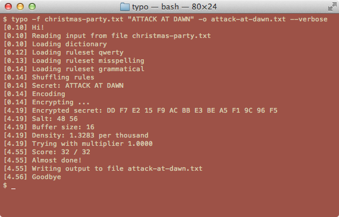

Version 0.2.5

This is a tool for typo-based text steganography. It lets you hide secret information in typographical errors.
Installation
Install Node.js.
Then run the following command:
npm install -g typo-steganography
Verify the installation:
typo --version
Usage
To encode a secret:
typo 'key:7d46187e' --file=message.txt --output-file=message-typo.txt
Where "key:7d46187e" is the secret.
To decode a secret:
typo --decode --file=message-typo.txt --original-file=message.txt
Where message.txt is the original file.
It should be possible to reconstruct message.txt from message-typo.txt simply by correcting the spelling errors.
Documentation
See typo --help for basics.
More examples, theory, and specification are coming shortly.
http://mjethani.github.io/typo
Issues
Feel free to report any problems directly to me at manish.jethani+typo@gmail.com. You can also track issues on the GitHub repository.
License
Please see the LICENSE file included in the package.
Copyright (c) 2015 Manish Jethani